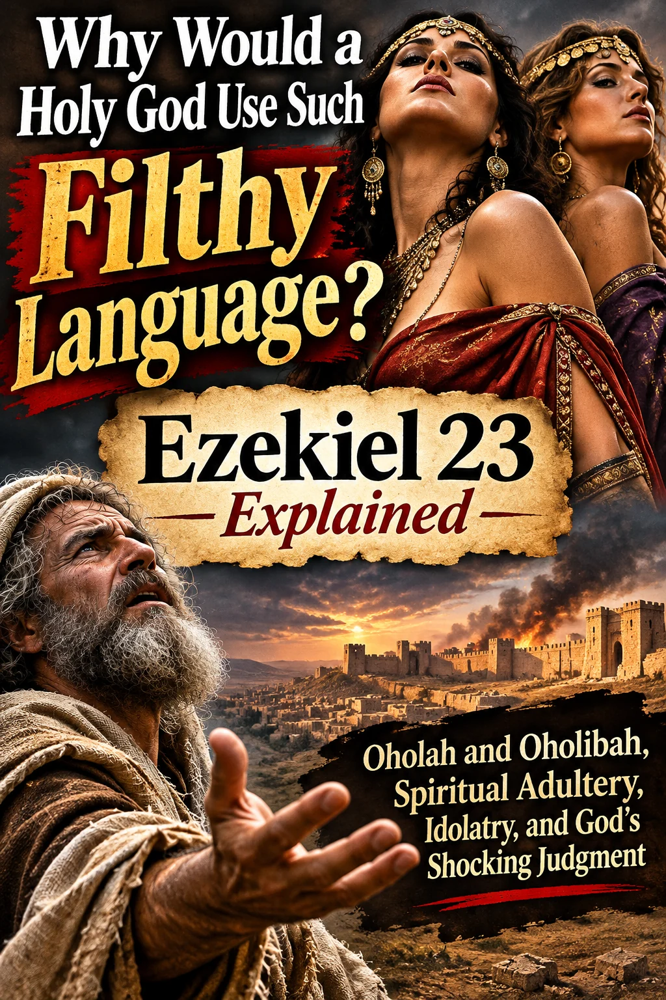

You read a passage in your Bible, stop halfway through, and think: “Did God really say that?” Ezekiel 23:20 has that effect. Its language is sexual, startling, and impossible to dress up as a pleasant Sunday-school illustration.
So let us ask the question plainly: Why would a holy God use such filthy language? Is Scripture being unnecessarily vulgar—or is God exposing a kind of spiritual unfaithfulness that we have learned to excuse?
Before we start accusing the prophet of impropriety, we need to do something modern readers do not always enjoy: read the entire chapter. This is not a random remark about women's bodies or a licence for Christians to insult women. It is a prophetic indictment of two nations that had abandoned the Lord who claimed them as His own.

What Does Ezekiel 23:20 Actually Say?
The King James Version does not soften the picture:
“For she doted upon their paramours, whose flesh is as the flesh of asses, and whose issue is like the issue of horses.”
Ezekiel 23:20 · King James VersionModern translations make the sexual imagery still more obvious. The comparison is deliberately crude. Ezekiel is not describing marital affection or giving sex advice. He is portraying uncontrolled desire through an intentionally offensive image.
But who is “she”? That question is essential. If we do not answer it first, we will misunderstand the whole sermon.
Who Are Oholah and Oholibah?
Ezekiel 23 begins with a story about two sisters. Thankfully, the prophet does not leave us guessing who they represent. In verse 4, he identifies them.
The northern kingdom of Israel, depicted as an unfaithful sister.
The southern kingdom of Judah, which witnessed Israel's fall but persisted in unfaithfulness.
When the chapter reaches verse 20, the subject is Oholibah—Jerusalem. These women are personifications of political and religious communities. Their lust portrays a history of looking to other nations for security, pursuing foreign alliances, and adopting idols.
There is irony here. God's people had experienced His protection, received His law, and been called to be holy. Yet they admired the power of Egypt, Assyria, and Babylon as though those nations could supply what God could not.
The image is not flattering, because the underlying betrayal was not small.
Why Is Ezekiel 23 So Graphic?
Because the prophet wants the people to feel the ugliness of what they have treated as normal.
Picture a husband whose wife repeatedly declares her love while chasing other lovers. Nobody would call that a healthy marriage. The promises and public ceremonies would ring hollow because the covenant itself had been betrayed.
Ezekiel uses that marriage picture to expose spiritual adultery in the Bible—unfaithfulness to the Lord through idolatry and misplaced trust. The exaggerated sexual description expresses appetite without restraint, the very opposite of fidelity.
And the chapter goes further than sensual imagery. Verses 36–39 accuse the kingdoms of bloodshed, child sacrifice, and defiling the sanctuary. Their sins were not merely a matter of dress or private temptation. They included serious injustice, destructive worship, and rebellion against God.
Some of the chapter's descriptions of punishment also involve disturbing humiliation and violence. We should not treat those scenes lightly or turn them into permission for human cruelty. Ezekiel announces judgment in a prophetic allegory; it is not an instruction for believers to mistreat anyone.
How Should Christians Read a Passage Like This?
We do not honour the Bible by pretending it says something less severe than it does. But neither do we honour the Bible by lifting its most explicit sentence out of context merely to shock our neighbours.
Ask four questions as you read: Who is being addressed? What covenant has been broken? What conduct is God condemning? What response does the warning demand? Those questions keep Ezekiel's graphic picture tied to his message.
God's holiness is not a delicate form of politeness. He does not become impure by speaking truthfully about human impurity. The prophet's uncomfortable language exposes the seriousness of covenant betrayal.
What About Gomer, the Wife of Hosea?
Now, dear sisters in Christ—and brothers, do not excuse yourselves from this sermon—I want to bring another biblical account into the conversation.
Gomer is not the woman in Ezekiel 23:20. She belongs to a different book: Hosea. Yet her story also uses marital unfaithfulness as a picture of Israel's spiritual wandering.
In Hosea 1:2, the prophet receives a difficult command involving a marriage marked by unfaithfulness. His marriage becomes a living sign of Israel's betrayal of the Lord. Later, in Hosea 3, the prophet is commanded to love an adulterous woman again. Verse 2 records a price in silver and barley; it does not describe every detail of how the transaction occurred.
What a picture of grace. The story will not let us minimize sin, but it will not let us forget faithful love either. The Lord confronts His people's wandering and calls them back.
“Go yet, love a woman beloved of her friend, yet an adulteress, according to the love of the LORD toward the children of Israel...”
Hosea 3:1 · King James VersionGomer's account and Ezekiel's allegory use related imagery. They are not interchangeable stories. Ezekiel 23 emphasizes shocking exposure and judgment; Hosea 3 makes the surprising call to renewed love especially vivid. Together they warn against unfaithfulness and point us toward God's dealings with His people.
Christian Modesty: Is the Problem Only What We Wear?
This is where my earlier reflection on Gomer challenged Christian women about modesty, attention, and the desire for approval. That concern still belongs in the conversation. Scripture calls believers to conduct themselves with modesty, self-control, and good works (1 Timothy 2:9–10).
But let us not make the mistake of thinking a piece of clothing proves whether a woman is spiritually faithful. Ezekiel 23 is not a dress-code passage. And men are accountable for their own lust and conduct; Jesus' warning in Matthew 5:28 gives no man permission to blame someone else for his sin.
The deeper question, for women and men alike, is this: Who is your heart trying to please?
Are we cultivating holiness before God, or performing for the applause of the world? Do we want people to see Christ in us, or are we desperate to be admired? Do we claim to love the Lord on Sunday and then devote the rest of the week to an idol?
An idol can be sensuality. It can also be money, reputation, success, political power, or even our own religious pride. None of those things has to be made of stone to become an object of worship.
You cannot have a faithful heart while continually making peace with what draws you away from the Lord. The call is not to inspect everyone else's wardrobe while leaving our own hearts untouched. It is to repent of whatever has taken the place that belongs to God.
Does Such a Severe Chapter Leave Any Hope?
Ezekiel 23 itself is a warning of judgment. We should let its severity stand instead of pretending the chapter ends with a cheerful rescue scene. But the Bible's larger story does not end at Ezekiel 23.
Hosea shows an unfaithful people being addressed with undeserved covenant love. The New Testament takes us further still: Jesus Christ came to save sinners, not to applaud sin.
Christ's death is not the same event as Hosea paying a price in silver and barley, yet that account can help us reflect on the costliness of redemption. As 1 Peter 1:18–19 teaches, believers are redeemed not by silver or gold, but by the precious blood of Christ.
That grace does not mean we may continue in rebellion without concern. Romans 6:1–2 rejects the idea that grace is an excuse to remain in sin. Grace calls us to turn from sin and walk in newness of life.
God does not expose sin because sin is a harmless embarrassment. He exposes it because it destroys. And He calls sinners to repentance because His mercy is not an invitation to keep running toward destruction.
Questions Readers Ask About Ezekiel 23
What does Ezekiel 23 verse 20 mean?
It is a deliberately graphic description of Jerusalem's unfaithfulness, pictured as a woman's lust. Its wider context condemns idolatry, misplaced trust in foreign powers, and covenant betrayal.
Why is Ezekiel 23 so graphic?
Its language is meant to confront the audience with the seriousness and ugliness of sins they had normalized. Reading the entire chapter explains the prophetic metaphor.
Who is the woman in Ezekiel 23:20?
She is Oholibah, representing Jerusalem and the kingdom of Judah. Ezekiel 23:4 identifies her explicitly.
Is Ezekiel 23 about Gomer?
No. Gomer is part of Hosea's account, which uses a related picture of unfaithfulness. Ezekiel names the two symbolic sisters Oholah and Oholibah.
Does this passage condemn women for how they dress?
No. Its primary subject is the covenant unfaithfulness of Samaria and Jerusalem. Christian modesty can be discussed from other passages, but should not be confused with Ezekiel's main message.
The Words Are Shocking. Is Your Heart Listening?
Some people encounter Ezekiel 23:20 and laugh. Others are offended. Still others rush to defend the wording while never examining the rebuke.
Perhaps the most dangerous response is to do all three—and remain unchanged.
God's word sometimes comforts; sometimes it cuts. When it confronts us, the question is not whether we can find softer language. The question is whether we will admit that the Lord is right about our sin.
So before you shut your Bible at Ezekiel 23 and declare the language too filthy, ask yourself whether there is something in your own heart that you have made too respectable to repent of.
Do not merely be shocked by the description of spiritual adultery. Be moved to leave it behind—and to cling to Christ.
← More articles from Old Time Preaching
- Ezekiel 23 · King James Version
- Hosea 1 and 3 · King James Version
- Bible.org · Ezekiel 23 contextual notes
- Enduring Word · Commentary on Ezekiel 23
Article illustration is original, not a historical depiction of identifiable biblical individuals.